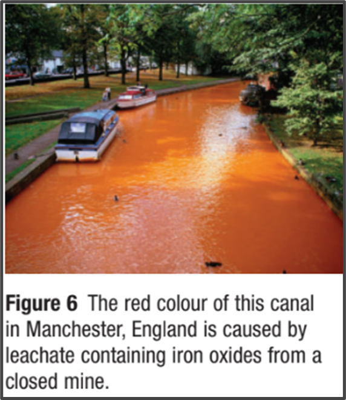
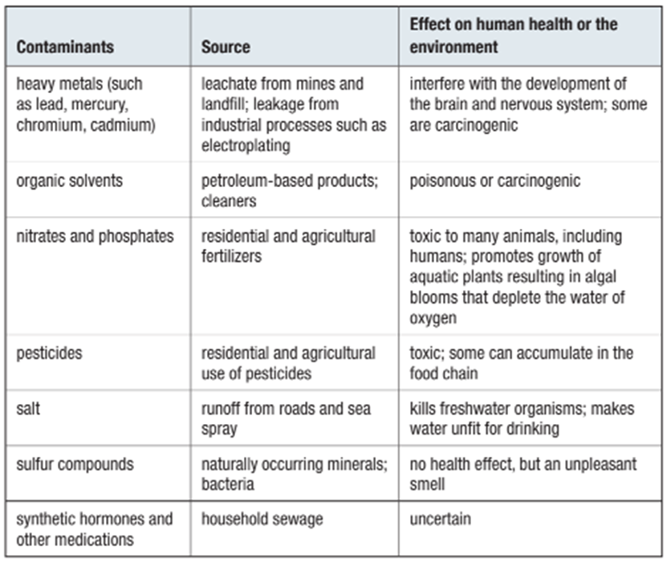

Example:
E. coli are bacteria found in feces. High levels of these organisms make water unfit for bathing or consumption. A common source of E. coli contamination of lake water is overloaded or leaking sewers.
In the spring of 2000, Canada’s worst-ever E. coli outbreak occurred in Walkerton, Ontario. Seven people died and hundreds more became sick. The source of the contamination was cattle manure with a particularly deadly strain of E. coli.
Farm runoff containing bacteria had seeped into the ground and contaminated an aquifer that was an important source of drinking water for the town. The investigation into the Walkerton tragedy concluded that it was preventable: the levels of chlorine used to disinfect the water had been inadequate.
Leachate is fluid that has passed through solid waste material and has extracted suspended or dissolved substances from mines or dumpsites. Leachate can pollute nearby bodies of water or underground aquifers.

